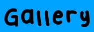

|  |
Seasonal Events are a continuous feature in Sky! Each Season lasts around nine to eleven weeks. During this time, a limited number of Expressions, Cosmetics, Props, Instruments, Calls, and Stances are accessible from Seasonal Spirits. During each Season, a new Constellation appears on the Constellation Table at Home and Aviary Village; it is located between Hidden Forest and Valley of Triumph.
This Seasonal Constellation holds the Friendship Trees of the current Season's Spirits, offering Cosmetics and other various items that can be unlocked with the Season Candle Currency earned during the Season. If players do not purchase the Season Pass, only about half of these will be purchasable. However, previous Seasonal Spirits return as Traveling Spirits – offering past Cosmetics and Expressions for non-Seasonal Currencies.
Seasons, and the Seasonal Spirits themselves, always follow a set theme and aesthetic. For instance, the Season of Belonging brought with it a family of Seasonal Spirits that the player had to collect and reunite. Starting from the Season of Enchantment, Seasonal Spirits can be found in the new sub-Realms instead of six main Realms and the Seasonal Guide offers Quests.
The Season Guide during the active Season gives out Season Candles (see below) as a reward for completing Daily Quests. This Spirit will also wear and sell the Ultimate Gifts of the Season, purchasable for Seasonal Hearts. With the July 2021 update to Sky: Children of the Light, all Seasonal Spirits from past and current Seasons are now visible in every Realm of the Sky Kingdom. Once a player has finished the final level (Eye of Eden) of the game at least once, it will now be possible to find and collect the base-level Expression from all Seasonal Spirits. However, in order to collect the Cosmetic items or upgrade the Expressions, the player will have to wait for those Spirits to return as Traveling Spirits.
Season Candles are the currency during a Seasonal Event. They are similar to the regular white Candles, except they are golden and feature the emblem of the current Season. Each Seasonal Event's Candles used to have their own unique color relating to the Season, but this is no longer the case.
Season Candles are rewarded by the Return Shrine Statue at Home and Aviary Village. Every day during the Season, a new set of Quests is available to complete, and the player receives one Season Candle per Quest completed. Season Candles are also sprinkled in one area of the main Realm of the day (whichever Realm the Daily Quests take place) and players can earn an extra Season Candle from collecting the wax from all four of these dotted about the Realm. Sometimes there is a Double Candle event where twice the amount of Season Candles can be found, meaning players instead have the opportunity to get two extra Season Candles.
Introduced with the Season of Belonging, Season Hearts are a currency used during Seasonal Events. They are used to exchange for Seasonal Ultimate Gifts from the Season Guide Spirit. This is the only purpose/use of Season Hearts. During a Season, these can be obtained in the Seasonal Constellation from each Seasonal Spirit's tree. A Season Heart will be located at the top of each tree (meaning a player will have to purchase everything from that Spirit to reach the Heart), it will cost 3 Season Candles, and can only be unlocked for those with the Season Pass. When a Seasonal Event concludes, any unused Season Hearts convert to regular Hearts (1:1).
The Season Pass was originally called the Adventure Pass but was renamed after Patch 0.18.0. The rewards from the Seasonal Spirits are divided into two tiers, a free tier and the Season Pass tier. If the player has purchased the Season Pass, the player will be able to unlock an extra reward for free with each item purchased in the Seasonal Spirits' Shops. Players can also purchase a Gift Pack that includes one Season Pass for the player, and two extra Passes to gift to friends (previously called the Gratitude Pack). The standalone Season Pass is available for $9.99 USD, the bundle $19.99 USD. When gifting a pass, the recipient will also receive the 30 Season Candles a normal pass provides. It is also possible to gift further individual passes, in addition to the bundle, for the price of $9.99 USD. Please note: a Season Pass is good for only one Season - the Seasonal Event that it was bought for. The Season Pass will need to be purchased new for each Season, if desired. However, leftover gift-passes will not expire if left unused. Two people can exchange leftover passes without owning a Season Pass for the next Seasons. Unused Gifts passes do not expire.
The Season Pass can be purchased in the same store that you buy Candles from, and as of February 2020 provides the following benefits: